Ni morbosidad , ni precipitación a la hora de informar sobre catástrofes.
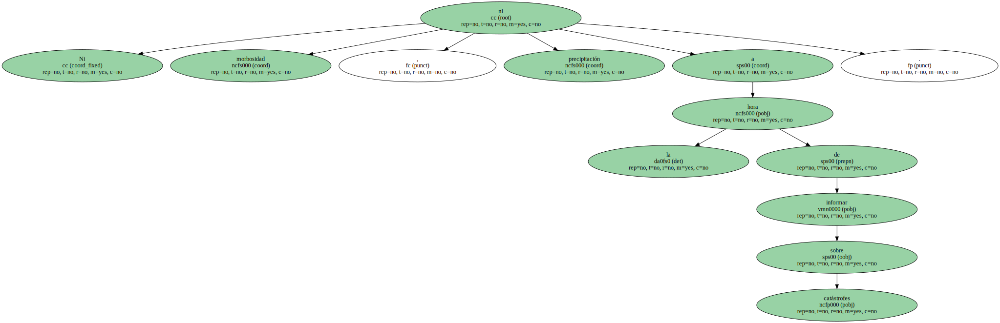Estas son las dos grandes recomendaciones que hizo ayer el Consell de l'Audiovisual de Catalunya ( CAC ) al presentar las normas que , a su juicio , deben prevalecer al informar de tragedias personales.
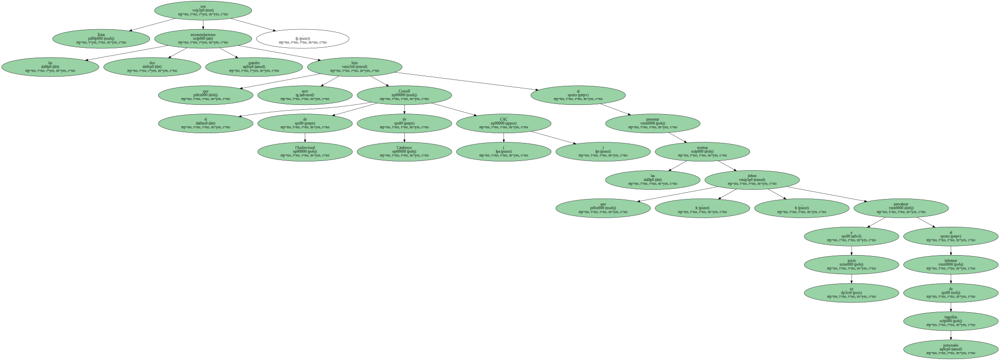La propuesta es una iniciativa inédita en España y con muy pocos referentes en Europa.
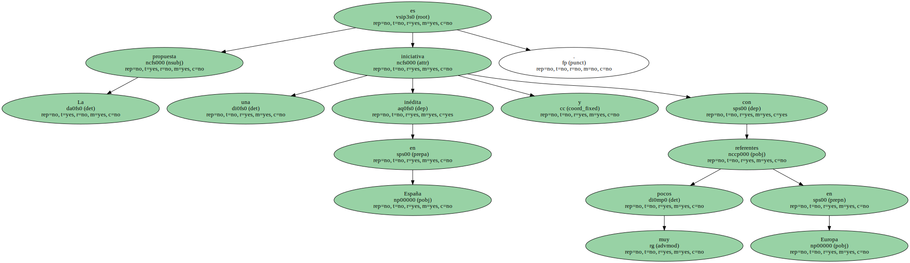En definitiva , el CAC reclama que no se convierta un hecho luctuoso en un espectáculo para los televidentes , como ocurrió en el reciente accidente de autocar de Golmayo ( Soria ) o tras el descubrimiento de los cuerpos de las niñas de Alcàsser , y que se respete el derecho a la privacidad de las víctimas y de sus familiares.
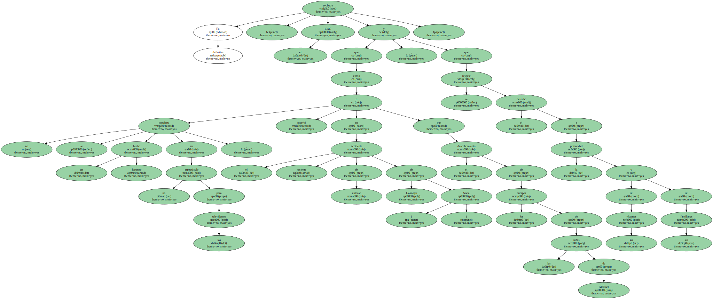Para asegurar estas premisas , el CAC lanza una triple recomendación.
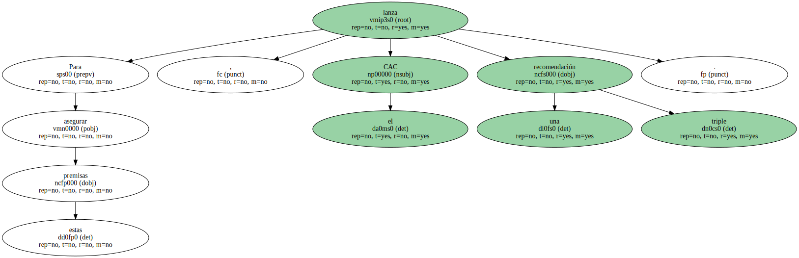A las autoridades les pide que tengan un trato diligente e igualitario a la hora de informar sobre una tragedia , sin protagonismos y renunciando a declaraciones rutinarias.
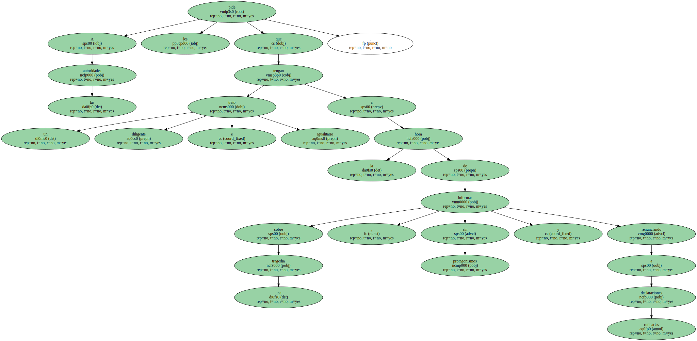También les propone que utilicen con " rigor y contención " las declaraciones de duelo oficial , para evitar sobredimensionar los hechos.
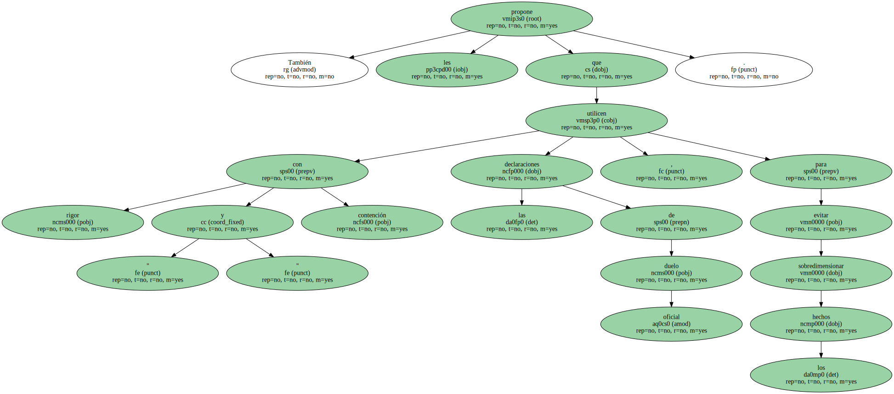A las empresas audiovisuales , el CAC recomienda que se encargue la cobertura a profesionales especializados y que antes de caer en la información rutinaria o superflua se recurra a especialistas.

Además , se muestra en contra de transformar las desgracias en shows para captar audiencia.
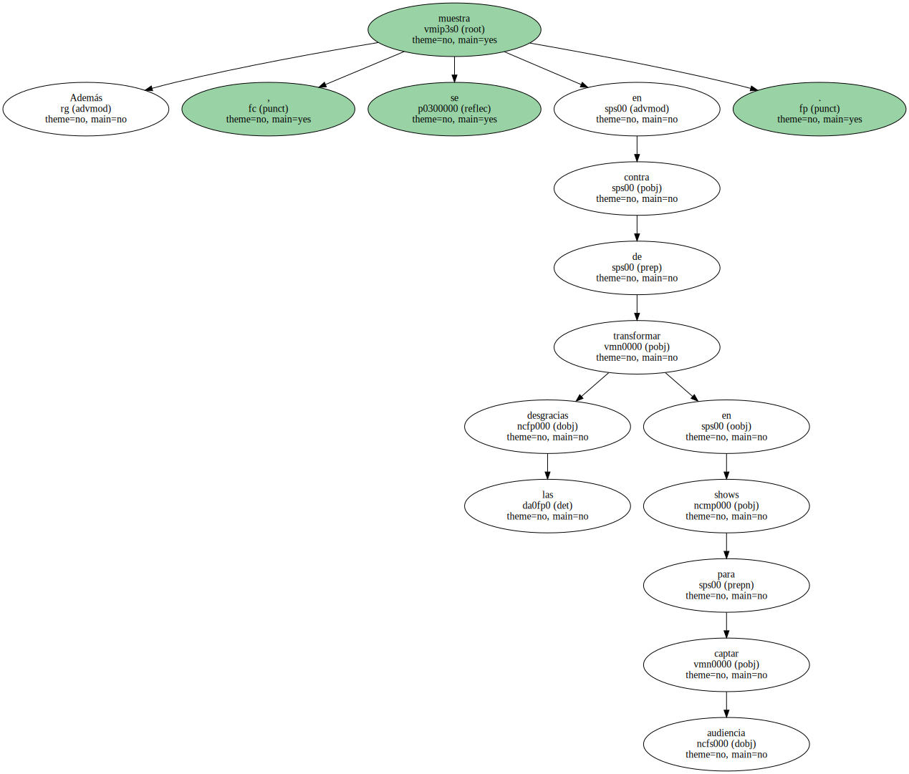Más desmenuzada es la propuesta dirigida a los profesionales.
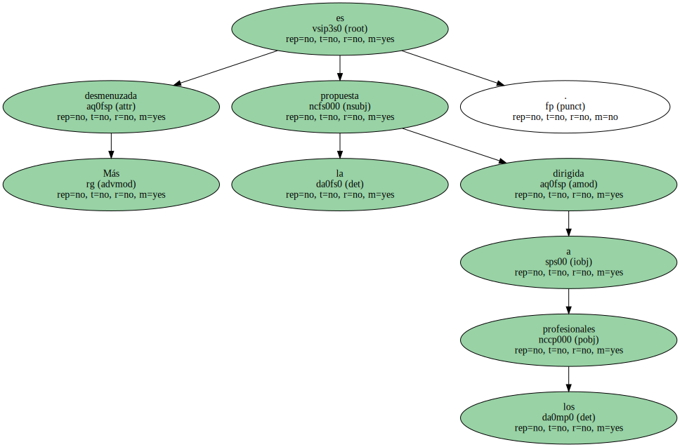A ellos , se les pide que no hagan entrevistas en situaciones de shock , que eviten primeros planos o planos cortos de personas heridas o en situación de sufrimiento ; que dejen de utilizar el zoom , como una forma de acercarse a la realidad , y que al informar no prejuzguen ni atribuyan responsabilidades sin estar confirmadas.
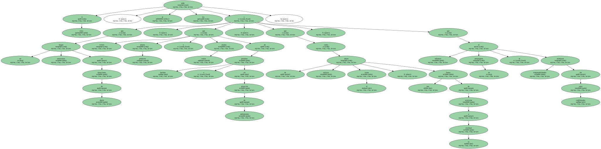El CAC , por último , se muestra en contra de ofrecer imágenes de funerales o de situaciones similares sin el consentimiento de los familiares , y que cuando se emitan escenas duras se avise a los telespectadores con suficiente antelación.
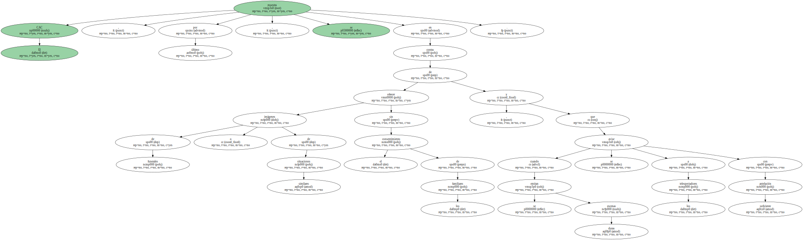